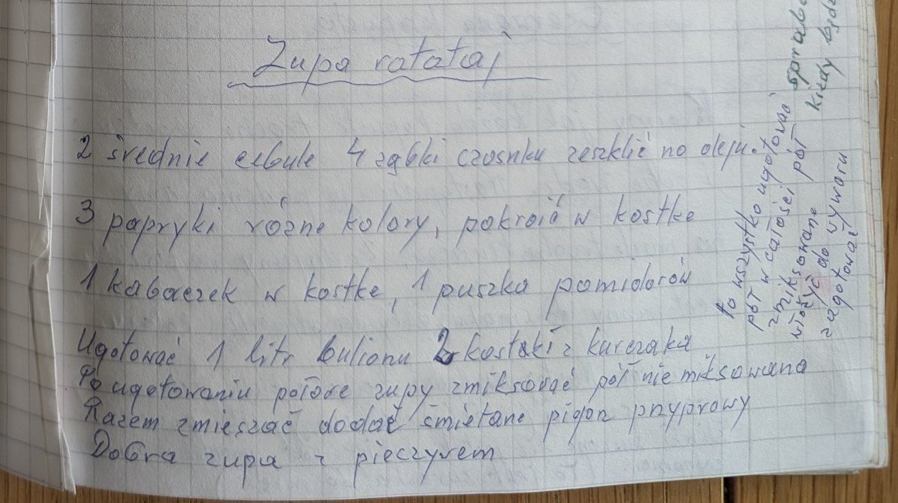

Zupa ratatuj


Składniki
- 2 średnie cebule
- 4 ząbki czosnku
- olej
- 3 papryki w różnych kolorach
- 1 kabaczek
- 1 puszka pomidorów
- 1 litr bulionu (2 kostki z kurczaka)
- śmietana
- pieprz, przyprawy
- pieczywo
Przygotowanie
- Cebulę i czosnek zeszklić na oleju.
- Dodać paprykę i kabaczek pokrojone w kostkę oraz puszkę pomidorów.
- Zalać litrem bulionu i ugotować.
- Połowę zupy zmiksować, połowę zostawić, połączyć.
- Dodać śmietanę, pieprz i przyprawy. Podawać z pieczywem.
Oryginalny zapis
Zupa ratatuj 2 średnie cebule 4 ząbki czosnku zeszklić na oleju. 3 papryki różne kolory, pokroić w kostkę 1 kabaczek w kostkę, 1 puszka pomidorów Ugotować 1 litr bulionu 2 kostki z kurczaka Po ugotowaniu połowę zupy zmiksować pół nie miksowana Razem zmieszać dodać śmietanę pieprz przyprawy Dobra zupa z pieczywem [dopisek pionowo na marginesie – częściowo nieczytelny:] To wszystko ugotowane pół w całości pół zmiksowane spróbować kiedy będzie miękka włożyć do wywaru zagotować